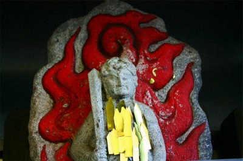

迫間不動尊/岐阜県
迫間不動尊/岐阜県
関市の迫間不動尊。
日本すきま漫遊記で見て以来、ずーっと気になっていた場所だ。
不動尊＝真言宗、といった図式を越えた「何か」に満ちている。つか寺？鳥居？神社？
「何か」に向かって手を合わせる男性。
傍から見ればあらぬ方向に手を合わせていたようにも見えたが、実は山に向かって拝んでいるのかも知れない。
そう、ここは山岳信仰や不動、地蔵信仰が渾然一体となった神仏習合の霊場のようなところみたい。
鳥居を潜ると、そこには小さな小屋のようなお堂が延々と並んでいた。
何故かステンレス製の壁のお堂が多い。そして中には不動サマやお地蔵サマの石像などが納められていた。
天狗の石像。やはり山岳信仰の修行場なのだろうか。
進むにつれ山が深くなってくる。
そしてこの看板である。先ほどの小屋は霊神場というらしい。
霊神という用語は御岳信仰でよく耳にする。御岳信仰、あるいはそれをベースにした信仰の霊場と推測できる。
ここで興味を惹くのは霊神場と呼ばれる霊場が区画ごとに分譲されている点。
迫間不動を信仰している講のような集団が独自に遥拝所のようなものを設けているのだろう。
ひな壇には大量の水子地蔵が並んでいる。
やや苔むした水子地蔵がズラリと並ぶ光景にはゾクリとさせられる。
そんなこんなで長い階段を上りきると大量のノボリが見えてきた。
ここには本堂、護摩堂があり、迫間不動尊の中核を成している。
それと同時に霊神場も大量に密集しているのだ。
霊神場もさきほどの小さな小屋のようなモノだけでなく、屋外に大型の石碑や石像が並んでいるパターンも多く見られる。
聞いた事のない様々な神仏の名前が刻まれた石碑、仏教神道何でもありの神仏像、さらに行者風の人物像まで並んでいる光景を見ると、数多くの神仏を併せ呑む混淆宗教である事が実感できる。
愛知県の御岳信仰の牙城、岩崎御嶽山を連想させる光景だ。
倶利伽羅不動や白龍権現などいかにも山岳信仰らしい神様が祀られているかと思えば大黒、恵比寿、慈母観音や風神など、え、それもアリなの？という神仏も混ざっていて、信仰のデパートのようだ。
通路が複雑に入り組んでいる。
山がちな地形といい、信仰がごった煮になっている点といい、どことなく篠栗の霊場にも似ている。
不動サマに金シールを貼るのは結構全国的なトレンドになりつつあるんですかねえ。

様々なモノが崇拝の対象となっている。岩とか。
十二支とか。
でももちろんここでは不動明王が一番のアイドルなのだ。
さて。
お目当ての奥の院に到着。
浅い洞窟の中にコンクリートの躯体を組んである。
洞窟入り口の脇に小さな滝がある。
ここでも滝行をしたりするのだろうか。
滝壺には賽銭と一緒に玉子がいくつかあった。何だ？これは？ゆで卵冷やしてるのか？
鳥居を潜って洞窟内に入ろう。

見上げればコンクリートの構造物が。
1階部分はピロティのようになっており、2階部分は小部屋とテラス。
洞窟の中に無理矢理床を渡し、小部屋を作る。チョットSF映画っぽくてかっこいいぞ。
鳥居を潜り堂内の階段を上ると小部屋がある。
重機どころか車両も近づけないようなこんな場所によくこれだけアクロバティックな建物をつくったものだ。
わざわざこんな場所に建物をつくるのはムダだとも思えるが、信仰上どうしても必要だったのだろうから見方によってはしごく当たり前だったりもする。
かように信仰の世界においては非合理性と合理性が180度ひっくり返ってしまい、一見非合理的な事をあたかも信仰における合理性の名の下に推し進めることがある。そこが不思議でもあり面白くもあるんだな。
中は祈祷スペースのようだ。
小部屋の奥、つまり洞窟の最深部には無数のロウソクが灯されていた。
境内に大勢人がいる様子はなかったが、ロウソクが長いところを見るとせいぜい数分〜数十分以内に点火されたものばかりだ。
そんなに参拝者いたかなあ？
落語の「死神」を連想させるような不思議な空間だ。

堂内の換気のためファンが設置してあった。
テラスの部分にもロウソクが灯されていた。
ここのロウソクには願い事が書かれている。
最善最良、という文字が多かったが、もちろん健康祈願や商売繁盛、合格祈願なども。
中には死者供養の文言が書かれているロウソクもあった。
2009.11.
珍寺大道場 HOME